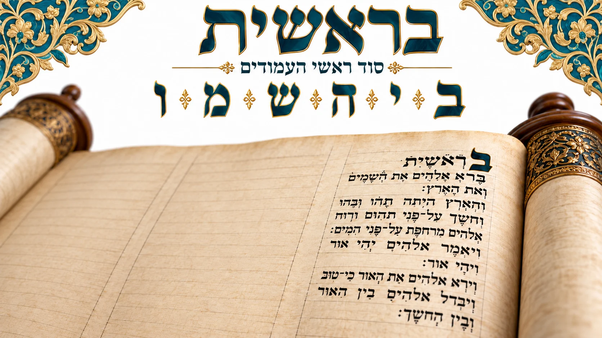

מסורות עימוד ספר התורה · חלק ראשון
כתיבת ראשי העמודים באותיות בי״ה שמ״ו

מנהג חשוב אצל הסופרים הוא להתחיל את עמודי התורה באותיות מסוימות, כמובא ברמ״א (יו״ד סימן רע״ג).
ישנן שש פתיחות בראשי עמודים, שסימנן בי״ה שמ״ו, ו״בראשית״ היא הראשונה שבהן. סמכו מנהג זה על הפסוק: ״סֹלּוּ לָרֹכֵב בָּעֲרָבוֹת בְּיָהּ שְׁמוֹ״ (תהלים ס״ח, ה׳).
תיארוך ספרי תורה
כאשר מבקשים ממני לתארך כתב של ספר תורה — לקבוע מאיזו תקופה הוא ומה גילו — ישנן כמה בדיקות: אופי הכתב, הקלף או הגוויל, צורתו ואופן עיבודו.
אולם הבדיקה המורכבת יותר, שבשבילה צריך לגלול את הספר כולו, היא כיצד התחיל הסופר את העמודים. סופר שהתחיל בצורה מסוימת 264 עמודים, לפי המנהג שהיה מקובל באותה תקופה, לא עשה זאת במקרה. מסורת רחבה כזאת עשויה להעיד גם על המקום שבו נכתב הספר.
ממזרח וממערב, מצפון ומים
לאחר שבדקנו מאות ספרי תורה שהגיעו ממקומות ידועים, ואנו מכירים את המנהגים שנהגו באירופה, במזרח ובמערב, אפשר להיעזר במסורות העימוד כדי לשייך גם ספרים נוספים למקום ולתקופה.
שש אותיות וחילופי מסורות
במסורת המקובלת ישנן שלוש פתיחות מוסכמות: ב׳ — ״בראשית״; ה׳ — ״הבאים אחריהם״, בשירת הים; ו׳ — ״ואעידה בם״, בשירת האזינו. בשאר האותיות — י׳, ש׳ ומ׳ — מצאנו מסורות שונות.
אות יו״ד
באות יו״ד נזכרו ״יהודה אתה״ ו״יודוך אחיך״. רבי עקיבא איגר מציין שהמנהג הוא להתחיל ב״יהודה״ (יו״ד סימן רע״ג).
אות שי״ן ומ״ם
בשי״ן יש ארבע שיטות: ״שמור לך״, ״שופטים ושוטרים״, ״שני השעירים״ ו״שמור ושמעת״. במ״ם יש שתי דעות: ״מה טובו״ או ״מוצא שפתיך״ (ש״ך שם; קסת הסופר ט״ז, ה׳).
מדוע הקפידו לפני השירות באותיות ה״א ווי״ו?
״הבאים״ ו״ואעידה״ אינן תחילת השירות עצמן, אלא פתיחות העמודים שבהם נכתבות שירת הים ושירת האזינו.
הרמב״ם מפרט גם את ראשי חמש השורות שלפני שירת הים ושש השורות שלפני האזינו. כלומר, המסורת כוללת את סידור השורות המקדימות לשירה. מבחינת מלאכת הסופר, סידורן קובע את מקומה של השירה בעמוד. הרמב״ם מכנה זאת קבלה שבידי הסופרים ״איש מפי איש״, אך מסיים ששינוי בפרטים אלו אינו פוסל (הלכות ספר תורה ז׳, י׳–י״א).
האם שינוי בזה פוסל?
הרשב״ץ מביא בשם הגהות רבנו פרץ שאי־הקפדה על בי״ה שמ״ו פוסלת אף בדיעבד, אך דוחה זאת בלשון: ״לא נראו דבריו כלל״ (שו״ת תשב״ץ א׳, קע״ו). בקסת הסופר נפסק: ״ובדיעבד אם לא כתבן כן אינו מעכב״ (ט״ז, ה׳).
העימוד חשוב מאוד בכתיבת סת״ם
בהוראת סת״ם חשוב לי להנחיל לתלמידים גם את מסורות העימוד ואת ההבחנה בין מנהג לדין המעכב.
הרבה פעמים מגיע אליי סופר עם כתב יפה, ואני מלמד אותו את סודות העימוד — והדבר משנה את כל הכתיבה. למדנו שהעימוד אינו יופי בלבד, אלא גם מבנה הלכתי המעוגן בפוסקים.
במאמר הבא נעסוק בחלקה השני של הסדרה: מנהג ״ווי העמודים״ — שאר עמודי התורה, מלבד ששת העמודים שעליהם דיברנו כעת.
שנזכה ללמוד וללמד, לשמור ולעשות, מתוך שמחה והבנה בתורה.
הרב יוחאי אוחיון
מומחה בהוראת הכתב הספרדי | ראש מכון אמנות הסת״ם